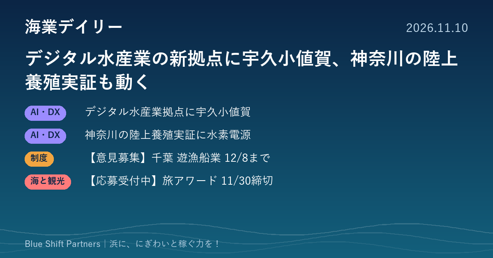

2026.11.10
デジタル水産業の新拠点に宇久小値賀、神奈川の陸上養殖実証も動く

水産庁がデジタル水産業戦略拠点の今年度2回目の選定結果を公表しました。神奈川県の陸上養殖モデルの実証に向けた設備の動きや、千葉県の遊漁船業に関する意見募集、観光庁のサステナブルな旅アワードの応募受付もお伝えします。
デジタル水産業戦略拠点に長崎県の宇久小値賀地域が選ばれました
水産庁は11月9日、デジタル水産業戦略拠点整備事業の令和8年度分・第2回の選定結果を公表しました。今回選ばれたのは長崎県の宇久小値賀地域で、提案者は宇久小値賀エリアデジタル水産業戦略検討部会です。この事業は、資源管理から消費までの各段階で別々に進んできたデジタル化をつなぐ地域の拠点をつくり、ほかの地域へ広げていくことをねらいとしています。
ここがポイント：離島の地域が拠点に選ばれたことは、規模の小さな浜でもデジタル化を地域ぐるみで進められる手がかりになります。漁協や自治体は、各拠点の取り組みを自分の地域で何から始めるかの参考にできます。
出典：水産庁 プレスリリース「デジタル水産業戦略拠点の選定結果（令和8年度分・第2回）について」（2026-11-09）
神奈川県の陸上養殖モデルの実証に、水素を使った電力供給の設備が採用されました
三菱化工機は11月6日、同社などが共同開発した水素吸蔵合金配送システムが、神奈川県が計画する「地域と連携した陸上養殖モデル」の実証事業に採用されたと発表しました。実証では、太陽光発電と燃料電池を組み合わせた閉鎖循環型の陸上養殖でハタ類を育てる計画で、設備は12月に搬入される予定です。発表によると、県は地元の漁協や大学、地域の民間企業と連携してこのモデルづくりを進めています。
ここがポイント：電源の確保は陸上養殖を浜で始めるときの課題のひとつです。漁協や自治体にとって、首都圏の県が漁協と組んで進める実証の行方は、地域で陸上養殖を検討するときの参考になります。
出典：三菱化工機株式会社「三菱化工機の水素吸蔵合金配送システム、陸上養殖モデルの実証事業用に採用」（PR TIMES）（2026-11-06）
【意見募集】千葉県が遊漁船業の処分基準の改正案について意見を募集しています（12/8必着）
千葉県は11月9日、「千葉県遊漁船業の適正化に関する法律の施行に係る不利益処分等基準取扱要領」の改正案を示し、意見の募集を始めました。知床沖の遊覧船事故などを受けて遊漁船業の適正化に関する法律が改正されたことに伴い、処分基準の新設などが必要になったためです。意見はちば電子申請サービス、郵送、ファックスのいずれかで、12月8日必着で県水産課漁業調整班へ提出します。
ここがポイント：遊漁船は釣りや海の体験を通じて浜に人を呼ぶ大切な担い手です。遊漁船業者や漁協は、県の処分の基準がどう変わるのかを確かめ、必要があれば意見を伝える機会になります。
出典：千葉県 水産課「千葉県遊漁船業の適正化に関する法律の施行に係る不利益処分等基準取扱要領の改正に関する意見募集について」（2026-11-09）
【応募受付中】観光庁「第4回サステナブルな旅アワード」11/30締切
観光庁は11月6日、持続可能な観光の推進に役立つ優れた旅行商品や取り組みを選ぶ「第4回サステナブルな旅アワード」の応募受付を始めました。応募できるのは旅行業者のほか、地方公共団体、観光振興団体、民間企業、NPO法人などですが、旅行業者と連携して旅行商品を販売している取り組みに限られます。締切は11月30日17時で、募集要領にあるフォームから事務局へ応募書類を提出します。
ここがポイント：漁業体験や漁村の食を組み込んだツアーを旅行会社と販売している地域にとって、取り組みを国内外へ発信してもらえる機会です。応募書類をまとめる作業自体が、自分たちの観光の強みを見直すきっかけにもなります。
出典：観光庁「第4回サステナブルな旅アワード」の募集について（2026-11-06）
デジタル化も陸上養殖も、浜だけで抱えず、漁協・自治体・企業・大学が役割を分けて進める形が広がっています。自分の浜に足りない役割は何か、誰と組めば埋まるかを書き出してみることが、稼ぐ力づくりの第一歩になります。